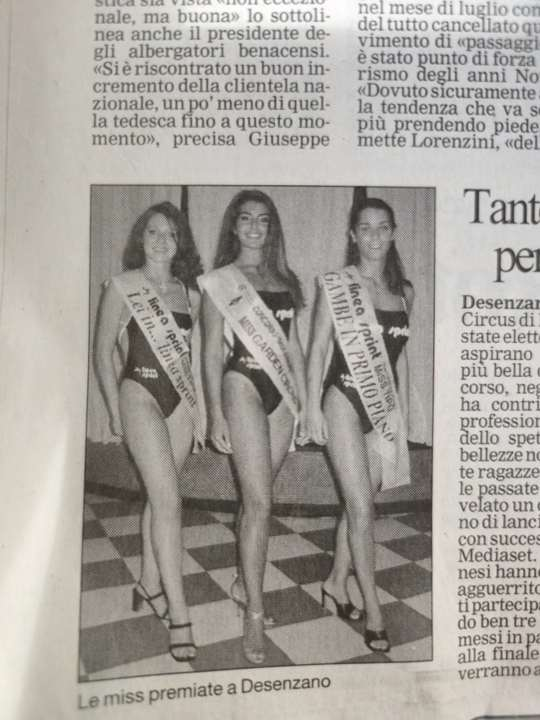
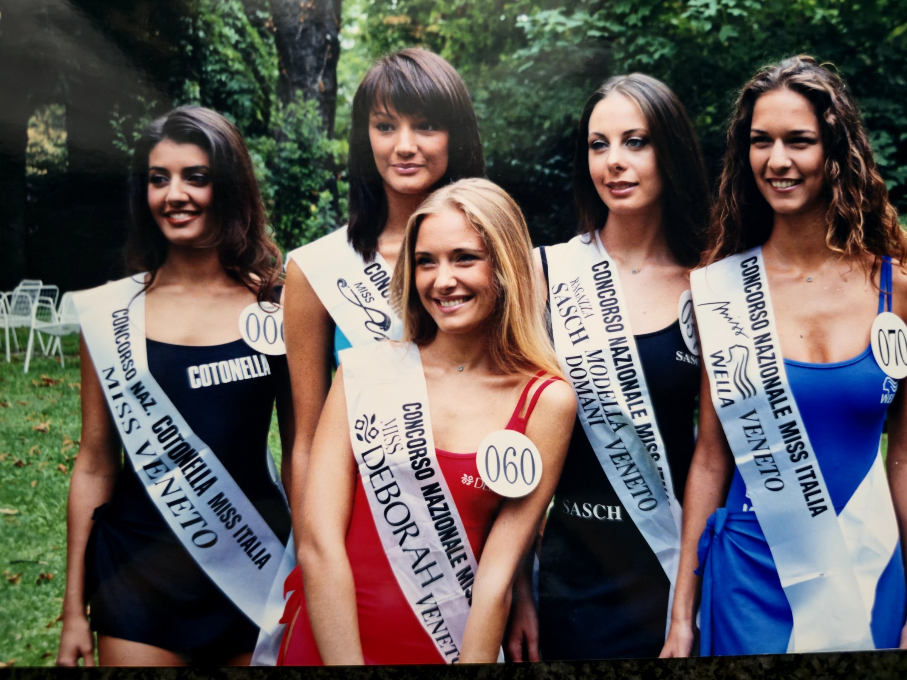
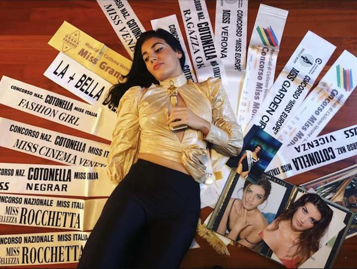
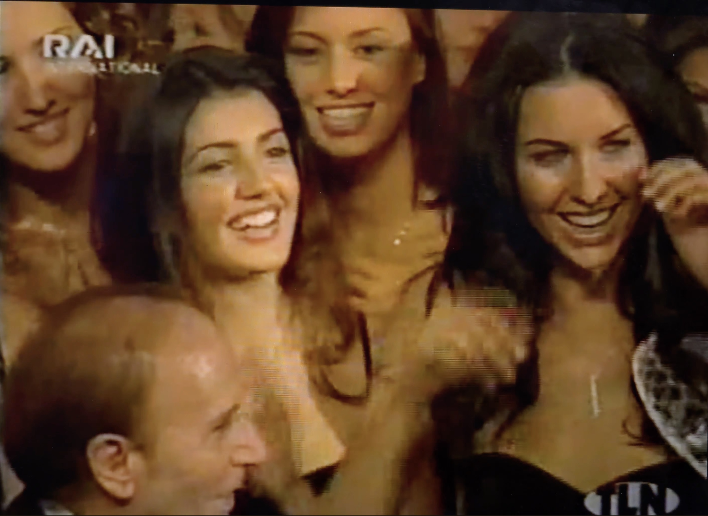
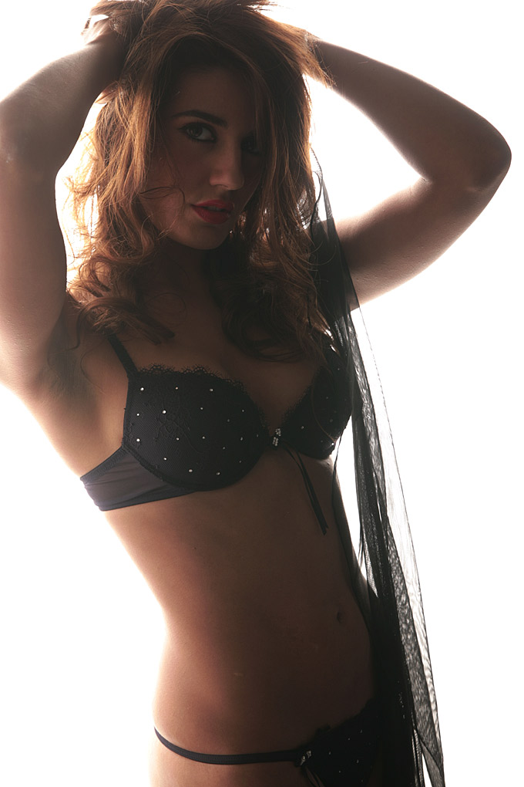

Valentina Black was seventeen when the pageants began, and by her own account she wanted no part of any of it. The first contest was a small, local affair in Verona, organised by a schoolmate who was already working toward a career in journalism and had put the event together herself. Painfully shy and deeply unsure of her looks at the time, Valentina agreed to take part for a reason that had nothing to do with ambition: she was afraid that saying no would hurt her friend's feelings.
She went into the contest determined to treat it lightly, but being put on display and judged felt, in her words, unbearable. What got her through the walk down the runway was the music playing over the speakers. It gave her something to hold on to, let her stop thinking and simply move, keeping time with the beat and carrying herself, she says, the way she imagined a dancer would.
She won. The feeling, she remembers, was strange rather than triumphant, and it turned more serious almost immediately, when talent scouts working the regional Miss Italia circuit began asking her to compete at the next level. One of them was Wilma, who ran auditions for the Miss Italia selections across the region. But the way Wilma actually found her had nothing to do with a stage.
A Betrayal, First
Before any of that, there was a rupture with her closest friend, one Valentina traces to envy. She discovered that her friend had been speaking badly of her behind her back to their shared circle, resentful of things going well for Valentina. The friendship ended without an explanation, no confrontation and no conversation, just a friend who stopped speaking to her entirely and cut her off cold.
The break came into sharp focus on an ordinary Sunday. Valentina was on her way to Mass in Piazza San Zeno, riding in the car with her parents, when she noticed a coach in the square marked "Gardaland," and, walking toward it, her former best friend with another girl beside her. Valentina rolled down the window. Her friend's only response was a single line before she turned and climbed aboard without waiting for an answer.
"Are you here to make me look bad?"
Stunned, Valentina got out of the car and followed her up the steps to try to talk things through. Inside, a woman with a blonde bob was seated behind a table covered in paperwork. She looked up and asked Valentina her name, and whether she had brought flesh-coloured tights. Valentina had no idea what she meant. Embarrassed, she explained that she had only come aboard to speak to a friend. Somewhere behind her, that same former friend was watching, arms crossed, daring her to explain herself, and Valentina, mortified and certain she had trespassed somewhere she shouldn't have, found she could not move.
The woman studied her for a long moment. Then she asked, simply:
"Do you want to take part?"
Valentina didn't understand what she was being asked to take part in, or what it would involve. The woman, Wilma, explained that the coach was running selections for the national Miss Italia pageant, one of the country's biggest events of the year, and that Valentina, in her view, had the right look for it. She held out a business card with a phone number and told her to think it over.
A Way Out of the Grief
Valentina went home that day lower than she had been in a long time, turning over the same question again and again: why a friend she had trusted had come to resent her so completely, and had ended things so coldly, without a word of explanation. But lying in bed that night, it was Wilma's voice she kept hearing, and the seriousness in it, which had stayed with her more than she expected.
She waited several days before she finally dialled the number on the card. What decided it, in the end, was not the pageant itself. She needed something to fill the space that losing her friend had left behind, and, if she is honest about it now, that was the only real reason she said yes: not ambition, not vanity, but an escape from a very specific kind of grief. Miss Italia, for Valentina Black, was never the plan. It was what happened while she was trying to outrun something else entirely.
From the Archive




